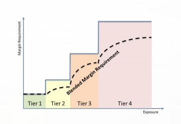

Devisen
182 Währungspaare im Kassahandel und 140 auf Termin.
Lesen Sie unsere Marginanforderungen und andere Informationen zum Marginhandel mit Saxo.
Neu führen wir ein Modell aus Anfangs- und Erhaltungsmargin für CFDs und Devisen ein, um einen Puffer zwischen Ihrer Kapazität Positionen zu eröffnen und dem Margin-Stop-Out-Level herzustellen. Das bedeutet, dass Sie nun zwei Marginanforderungen beachten müssen.
Hier erfahren Sie mehr über die Anfangs- und Erhaltungsmargin.
Devisen sind ein Hebelprodukt, d. h., dass es einem Trader die Möglichkeit bietet, grosse Mengen von Kapital mit sehr wenig Geld zu kontrollieren; je höher der Hebel desto höher das Risikoniveau.
Die Marginanforderungen können sich je nach Währungspaar unterscheiden und je nach der zugrunde liegenden Liquidität und Volatilität des Währungspaars ändern. Aus diesem Grund erfordern die liquidesten (die grossen) Währungspaare in den meisten Fällen eine niedrigere Marginanforderung.
Saxo Bank bietet die Möglichkeit der gestaffelten Margin-Methode. Mit diesem Mechanismus können politische und wirtschaftliche Ereignisse verwaltet werden, mit denen der Markt volatiler werden und sich schneller ändern kann.
Klicken Sie hier, wenn Sie weitere Informationen zu dieser Methode erfahren möchten.
Eine vollständige Liste der Margin-Anforderungen nach Währungspaar kann im Bereich Margin- und Handelsanforderungen angezeigt werden. Sie ist zudem in den SaxoTrader-Plattformen unter dem Punkt ‹Handelsbedingungen› zu finden.
Marginanforderungen können ohne vorherige Ankündigung geändert werden. Saxo Bank behält sich das Recht vor, die Marginanforderungen für grössere Positionen zu erhöhen, ebenso wie für Kunden-Portfolios, die als hochriskant eingestuft werden.
Falls die für die Beibehaltung einer offenen Devisen-Position erforderliche Margin die auf dem Konto verfügbaren Mittel übersteigt, riskieren Sie ein Stop-Out. Sie werden im Falle eines Margin Call informiert und müssen den Umfang der offenen Positionen reduzieren und/oder mehr Mittel (Sicherheitenmargin) in das Konto einzahlen. Falls Sie nichts unternehmen, kann Saxo alle oder einen Teil der offenen Position schliessen, um dass Engagement auf ein annehmbares Niveau zu senken.
(In der EU wohnhafte Privatanleger)
Neu führen wir ein Modell aus Anfangs- und Erhaltungsmargin für CFDs und Devisen ein, um einen Puffer zwischen Ihrer Kapazität Positionen zu eröffnen und dem Margin-Stop-Out-Level herzustellen. Das bedeutet, dass Sie nun zwei Marginanforderungen beachten müssen.
Hier erfahren Sie mehr über die Anfangs- und Erhaltungsmargin.
Saxo bietet die Möglichkeit der gestaffelten Margin-Methode. Mit diesem Mechanismus können politische und wirtschaftliche Ereignisse verwaltet werden, mit denen der Markt volatiler werden und sich schneller ändern kann. Mit einer gestaffelten Margin steigert sich die durchschnittliche Marginanforderung (‹gemischte Marginanforderung›) mit dem Engagement-Level. Umgekehrt gilt aber auch, dass mit sinkendem Engagement-Level auch die Marginanforderung sinkt. Dieses Konzept ist nachfolgend veranschaulicht:

Die verschiedenen Engagement-Levels (oder ‹Tiers›) werden als absolute Zahlen in US-Dollar (USD) in allen Währungspaaren dargestellt. Jedes Währungspaar hat bei jedem Tier eine bestimmte Marginanforderung. Eine vollständige Liste der Marginanforderungen nach Währungspaar kann hier angezeigt werden. Sie ist zudem in den SaxoTrader-Plattformen unter dem Punkt ‹Handelsbedingungen› zu finden.
Wir weisen darauf hin, dass die Marginanforderungen ohne vorherige Ankündigung geändert werden können. Saxo behält sich das Recht vor, die Marginanforderungen für grössere Positionen zu erhöhen, ebenso wie für Kunden-Portfolios, die als hochriskant eingestuft werden.
Das Modell aus Anfangs- und Erhaltungsmargin für CFDs und Devisen ist dafür konzipiert, einen Puffer zwischen Ihrer Kapazität, Positionen zu eröffnen, und dem Margin-Stop-Out-Level herzustellen. Das bedeutet, dass Sie zwei Marginanforderungen beachten müssen.
Hier erfahren Sie mehr über die Anfangs- und Erhaltungsmargin.
Die Marginanforderung bei Devisenoptionen wird pro Währungspaar und Fälligkeitsdatum berechnet, angepasst an das System vom Devisen-Kassa-Handel. Für jedes Währungspaar gibt es eine Obergrenze der Marginanforderung, die der höchst möglichen Positionsgrösse übergreifend über Devisenoptionen sowie Devisen-Spot- und -Terminpositionen entspricht, multipliziert mit der aktuellen Spot-Marginanforderung. Bei dieser Berechnung wird ausserdem das potenzielle Verrechnen zwischen Devisenoptionen und Devisen-Spot- und -Terminpositionen berücksichtigt.
Bei Strategien mit begrenztem Risiko, z. B. einem Short-Call-Spread, wird die Marginanforderung auf ein Portfolio mit Devisenoptionen als maximaler künftiger Verlust berechnet.
Bei Strategien mit unbegrenzten Risiken, z. B. Naked-Short-Optionen, wird die Marginanforderung als nomineller Betrag multipliziert mit der geltenden Spot-Marginanforderung berechnet.
Gestaffelte Marginsätze kommen dann bei der Berechnung von Devisenoptionsmargin zur Anwendung, wenn sich die Marginanforderung eines Kunden an der aktuellen Devisen-Spot-Marginanforderung orientiert, und nicht am maximalen künftigen Verlust. Die aktuellen Devisen-Spot-Marginabstufungen beruhen auf Nennbeträgen in USD. Je höher der Nennbetrag, desto höher ist potenziell die Marginanforderung. Die gestaffelte Marginanforderung wird pro Währungspaar berechnet. Bei der Berechnung der Devisenoptionsmargin entspricht die geltende Spot-Marginanforderung für jedes Währungspaar dem gestaffelten oder gemischten Marginsatz, der anhand des höchsten potenziellen Nominalrisikos für die Devisenoptionen sowie Devisen-Spot- und -Terminpositionen bestimmt wird.
Sie verkaufen einen Call-Spread auf 10 Mio. USDCAD zu Ausübungspreisen von 1,41 und 1,42.
Der aktuelle Spot-Kurs liegt bei 1,40.
Die Marginanforderung entspricht dem maximalen künftigen Verlust von 71‘429 USD (10 Mio. x (1,42 – 1,41) = 100‘000 CAD/USD bei 1,40).
Sie verkaufen eine Put-Option über 10 Mio. USDCAD. Sie verfügen über ein unbegrenztes Abwärtsrisiko. Die Marginanforderung wird daher als Nominalbetrag multipliziert mit der aktuellen Spot-Marginanforderung berechnet.
Der aktuelle Spot-Marginsatz wird anhand des höchsten potenziellen Nominalrisikos berechnet, also 10 Mio. USD.
Somit entspricht der aktuelle Spot-Kurs dem gemischten Marginsatz von 2,2% ((1% x 3 Mio. USD + 2% x 2 Mio. USD + 3% x 5 Mio. USD)/10 Mio).
Die Marginanforderung beträgt somit 220‘000 USD (2,2% x 10 Mio. USD).
Die Berechnung der Margin für Devisenoptionen gilt nicht für Touch Options. Offene Positionen beeinflussen jedoch die Summe, die Ihnen für Marginhandel zur Verfügung steht, so wie in der Kontoübersicht angezeigt.
Somit erhöht sich die ‹Marginauslastung›, wenn das Konto Marginpositionen enthält und Touch-Option-Positionen hinzugefügt werden.
Hinweis. Vor Eröffnung einer Position wird eine Vorprüfung durchgeführt, um sicherzustellen, dass Sie nicht versehentlich eine Touch-Option-Position eröffnen, die die Marginauslastung über 100% bringt.
Das Modell aus Anfangs- und Erhaltungsmargin für CFDs und Devisen ist dafür konzipiert, einen Puffer zwischen Ihrer Kapazität, Positionen zu eröffnen, und dem Margin-Stop-Out-Level herzustellen. Das bedeutet, dass Sie zwei Marginanforderungen beachten müssen.
Hier erfahren Sie mehr über die Anfangs- und Erhaltungsmargin.
The margin requirement applicable to opening and maintaining a margin position consists of two elements:
The initial and maintenance margin of a single stock CFD is based on the stock rating. Saxo defines 6 different stock ratings. This rating is derived from the market capitalization, liquidity and volatility of the underlying asset.
A stock with rating 1 has an initial margin of 10%. This means that this stock can be traded at 10:1 leverage.
| Saxo Rating | Initial margin | Maintenance Margin |
|---|---|---|
| 1 | 10,00 % | 9,00 % |
| 2 | 15,00 % | 12.50 % |
| 3 | 20,00 % | 17,50 % |
| 4 | 30,00 % | 25,00 % |
| 5 | 50.00 % | 45,00 % |
| 6 | 110.00 % | 100,00 % |
The margin requirement applicable to opening and maintaining a margin position consists of two elements:
An Index CFD with an initial margin of 5% can be traded at 20:1 leverage.
| Indeks-tracker | Initial margin | Maintenance Margin | |
|---|---|---|---|
 | US 30 Wall Street | 2,50 % | 2,00 % |
| US 500 | 2,50 % | 2,00 % |
| US Tech 100 NAS | 2,50 % | 2,00 % |
 | Belgium 20 | 5,00 % | 4,50 % |
 | Denmark 25 | 5,00 % | 4,50 % |
 | EU Stocks 50 | 3,00 % | 2,50 % |
 | France 40 | 3,00 % | 2,50 % |
 | Germany 30 | 3,00 % | 2,50 % |
| Germany Mid-Cap 50 | 5,00 % | 4,50 % |
| Germany Tech 30 | 5,00 % | 4,50 % |
 | Italy 40 | 5,00 % | 4,50 % |
 | Netherlands 25 | 5,00 % | 4,50 % |
 | Norway 25 | 5,00 % | 4,50 % |
 | Portugal 20 | 10,00 % | 9,50 % |
 | South Africa 40 | 10,00 % | 9,50 % |
 | Spain 35 | 5,00 % | 4,50 % |
 | Sweden 30 | 5,00 % | 4,50 % |
 | Switzerland 20 | 5,00 % | 4,50 % |
 | UK 100 | 3,00 % | 2,50 % |
| UK Mid 250 | 5,00 % | 4,50 % |
 | Australia 200 | 3,00 % | 2,50 % |
 | Japan 225 | 3,00 % | 2,50 % |
 | Hong Kong | 5,00 % | 4,50 % |
| Indeks-tracker | Initial margin | Maintenance Margin | |
|---|---|---|---|
 | China 50 | 10,00 % | 9,00 % |
 | India 50 | 10,00 % | 9,00 % |
 | Singapore | 10,00 % | 9,00 % |
 | Taiwan | 10,00 % | 9,00 % |
| US2000 | 5,00 % | 4,50 % |
The margin requirement applicable to opening and maintaining a margin position consists of two elements:
| Instrument Name | Symbol | Initial margin | Maintenance Margin |
|---|---|---|---|
| VALUTAER | |||
| Euro / amerikanske dollar | EURUSDEC | 2,00 % | 1,50 % |
| Euro / japanske yen | EURJPYRY | 4,00 % | 3,50 % |
| Euro / schweizerfranc | EURCHFRF | 4,00 % | 3,50 % |
| Euro / britiske pund | EURGBPRP | 5,00 % | 4,50 % |
| Britiske pund / amerikanske dollar | GBPUSDBP | 5,00 % | 4,50 % |
| Australske dollar / amerikanske dollar | AUDUSDAD | 4,00 % | 3,50 % |
| USD-indeks | USDINDEX | 1,50 % | 1,00 % |
The margin requirement applicable to opening and maintaining a margin position consists of two elements:
A Commodity CFD with an initial margin of 20% can be traded at 5:1 leverage.
| Instrument Name | Symbol | Initial margin | Maintenance Margin |
|---|---|---|---|
METALS | |||
| Guld | GOLD | 4,00 % | 3,50 % |
| Sølv | SILVER | 5,00 % | 4,50 % |
| Platin | PLATINUM | 8,00 % | 7,50 % |
| Palladium | PALLADIUM | 8,00 % | 7,50 % |
| Amerikansk kobber | COPPERUS | 4,00 % | 3,50 % |
ENERGY | |||
| Amerikansk råolie | OILUS | 5,00 % | 4,50 % |
| Britisk råolie | OILUK | 5,00 % | 4,50 % |
| Fyringsolie | HEATINGOIL | 5,00 % | 4,50 % |
| Amerikansk benzin | GASOLINEUS | 5,00 % | 4,50 % |
| Gasolie | GASOILUK | 5,00 % | 4,50 % |
| Amerikansk naturgas | NATGAS | 10,00 % | 9,00 % |
| CO2-emissioner | EMISSIONS | 10,00 % | 9,00 % |
AGRICULTURE | |||
| Majs | CORN | 5,00 % | 4,50 % |
| Hvede | WHEAT | 5,00 % | 4,50 % |
| Soyabønner | SOYBEANS | 5,00 % | 4,50 % |
SOFTS | |||
| New York – sukker nr. 11 | SUGARNY | 8,00 % | 7,50 % |
| New York – kaffe | COFFEE | 8,00 % | 7,50 % |
| New York – kakao | COCOA | 8,00 % | 7,50 % |
MEATS | |||
| Levende slagtekvæg | LIVECATTLE | 5,00 % | 4,50 % |
The margin requirement applicable to opening and maintaining a margin position consists of two elements:
A Bond CFD with an initial margin of 20% can be traded at 5:1 leverage.
| Instrument Name | Initial margin | Maintenance Margin |
|---|---|---|
| Tyske statsobligationer, 5-årige, Bobl | 1,50 % | 1,00 % |
| Tyske statsobligationer, 5-årige, Schatz | 1,50 % | 1,00 % |
| Tyske statsobligationer, 10-årige, Bund | 1,50 % | 1,00 % |
| Franske statsobligationer, 10-årige, OAT | 1,50 % | 1,00 % |
| Italienske statsobligationer, 10-årige, BTP | 2,00 % | 1,50 % |
Das Modell aus Anfangs- und Erhaltungsmargin für CFDs und Devisen ist dafür konzipiert, einen Puffer zwischen Ihrer Kapazität, Positionen zu eröffnen, und dem Margin-Stop-Out-Level herzustellen. Das bedeutet, dass Sie zwei Marginanforderungen beachten müssen.
Hier erfahren Sie mehr über die Anfangs- und Erhaltungsmargin.
Das Modell aus Anfangs- und Erhaltungsmargin für CFDs und Devisen ist dafür konzipiert, einen Puffer zwischen Ihrer Kapazität, Positionen zu eröffnen, und dem Margin-Stop-Out-Level herzustellen. Das bedeutet, dass Sie zwei Marginanforderungen beachten müssen.
Die Anfangs- und Erhaltungsmargin eines CFD auf Einzelaktien basiert auf dem Aktienrating. Saxo definiert 6 verschiedene Aktienratings. Dieses Rating ergibt sich aus der Marktkapitalisierung, Liquidität und Volatilität des zugrunde liegenden Vermögenswertes.
Eine Aktie mit Rating 1 hat eine Anfangsmargin von 10%. Dies bedeutet, dass diese Aktie mit einem Hebel von 10:1 gehandelt werden kann.
| Saxo-Rating | Anfangsmargin | Erhaltungsmargin |
|---|---|---|
| 1 | 20% | 10% |
| 2 | 20% | 15% |
| 3 | 25% | 20% |
| 4 | 35% | 30% |
| 5 | 55% | 50% |
| 6 | 110% | 100% |
Im unten stehenden Link finden Sie Ihre lokale Aktie und können sehen, welche Margin-Bewertung sie hat.
Das Modell aus Anfangs- und Erhaltungsmargin für CFDs und Devisen ist dafür konzipiert, einen Puffer zwischen Ihrer Kapazität, Positionen zu eröffnen, und dem Margin-Stop-Out-Level herzustellen. Das bedeutet, dass Sie zwei Marginanforderungen beachten müssen.
Ein Index-CFD mit einer Anfangsmargin von 5% kann mit einem Hebel von 20:1 gehandelt werden.
| Index-Tracker | Anfangsmargin | Erhaltungsmargin | |
|---|---|---|---|
| US 30 Wall Street | 5% | 2,5% |
| US 500 | 5% | 2,5% |
| US Tech 100 NAS | 5% | 2,5% |
| Belgium 20 | 10% | 5% |
| Denmark 25 | 10% | 5% |
| EU Stocks 50 | 8% | 4% |
| France 40 | 8% | 4% |
| Germany 30 | 8% | 4% |
| Germany Mid-Cap 50 | 10% | 5% |
| Germany Tech 30 | 10% | 5% |
| Italy 40 | 10% | 5% |
| Netherlands 25 | 10% | 5% |
| Norway 25 | 10% | 5% |
| Portugal 20 | 10% | 5% |
| South Africa 40 | 20% | 10% |
| Spain 35 | 10% | 5% |
| Sweden 30 | 10% | 5% |
| Switzerland 20 | 10% | 5% |
| UK 100 | 5% | 2,5% |
| UK Mid 250 | 10% | 5% |
| Australia 200 | 5% | 2,5% |
| Japan 225 | 5% | 2,5% |
| Hongkong | 10% | 5% |
| Index-Tracker | Anfangsmargin | Erhaltungsmargin | |
|---|---|---|---|
| China 50 | 10% | 5% |
| India 50 | 10% | 5% |
| Singapur | 10% | 5% |
| Taiwan | 10% | 5% |
| US2000 | 10% | 5% |
Das Modell aus Anfangs- und Erhaltungsmargin für CFDs und Devisen ist dafür konzipiert, einen Puffer zwischen Ihrer Kapazität, Positionen zu eröffnen, und dem Margin-Stop-Out-Level herzustellen. Das bedeutet, dass Sie zwei Marginanforderungen beachten müssen.
Ein Devisen-CFD mit einer Anfangsmargin von 2,0% kann mit einem Hebel von 50:1 gehandelt werden.
Der Hebel für Devisen-CFDs ist entweder 50:1 oder 25:1, was einer Margin von 2% oder 4% entspricht.
| Bezeichnung des Instruments | Symbol | Anfangsmargin | Erhaltungsmargin |
|---|---|---|---|
| WÄHRUNGEN | |||
| Euro/US-Dollar | EURUSDEC | 3,33% | 1,66% |
| Euro/Japanischer Yen | EURJPYRY | 3,33% | 1,66% |
| Euro/Schweizer Franken | EURCHFRF | 3,33% | 1,66% |
| Euro/Britisches Pfund | EURGBPRP | 3,33% | 1,66% |
| Britisches Pfund/US-Dollar | GBPUSDBP | 3,33% | 1,66% |
| Australischer Dollar/US-Dollar | AUDUSDAD | 5,00% | 2,50% |
| USD Index | USDINDEX | 20% | 10% |
Das Modell aus Anfangs- und Erhaltungsmargin für CFDs und Devisen ist dafür konzipiert, einen Puffer zwischen Ihrer Kapazität, Positionen zu eröffnen, und dem Margin-Stop-Out-Level herzustellen. Das bedeutet, dass Sie zwei Marginanforderungen beachten müssen.
Ein CFD auf Rohstoffe mit einer Anfangsmargin von 10% kann mit einem Hebel von 10:1 gehandelt werden.
| Bezeichnung des Instruments | Symbol | Anfangsmargin | Erhaltungsmargin |
|---|---|---|---|
METALLE | |||
| Gold | GOLD | 5% | 2,5% |
| Silber | SILBER | 10% | 5% |
| Platin | PLATIN | 10% | 5% |
| Palladium | PALLADIUM | 10% | 5% |
| US Kupfer | KUPFER US | 10% | 5% |
ENERGIE | |||
| US Crude (Rohöl) | ÖL US | 10% | 5% |
| UK Crude (Rohöl) | ÖL UK | 10% | 5% |
| Heizöl | HEIZÖL | 10% | 5% |
| Gasoline US (Benzin) | GASOLINE US | 10% | 5% |
| Gas Öl | GAS ÖL UK | 10% | 5% |
| US Erdgas | ERDGAS | 10% | 5% |
| CO2-Emissionen | EMISSIONEN | 10% | 5% |
LANDWIRTSCHAFT | |||
| Mais | MAIS | 10% | 5% |
| Weizen | WEIZEN | 10% | 5% |
| Sojabohnen | SOJABOHNEN | 10% | 5% |
AGRARROHSTOFFE | |||
| NY Zucker Nr. 11 | ZUCKER NY | 10% | 5% |
| NY Kaffee | KAFFEE | 10% | 5% |
| NY Kakao | KAKAO | 10% | 5% |
FLEISCH | |||
| Lebendvieh | LEBENDVIEH | 10% | 5% |
Das Modell aus Anfangs- und Erhaltungsmargin für CFDs und Devisen ist dafür konzipiert, einen Puffer zwischen Ihrer Kapazität, Positionen zu eröffnen, und dem Margin-Stop-Out-Level herzustellen. Das bedeutet, dass Sie zwei Marginanforderungen beachten müssen.
Ein Anleihen-CFD mit einer Anfangsmargin von 10% kann mit einem Hebel von 10:1 gehandelt werden.
| Anfangsmargin | Erhaltungsmargin | Produkt/Instrument |
|---|---|---|
| 20% | 10% | Deutsche 5-Jährige-Bobl-Futures Deutsche 2-Jährige-Schatz-Futures |
| 20% | 10% | Deutsche 10-Jährige-Bundesanleihen |
| 20% | 10% | Französische 10-Jährige-OAT |
| 20% | 10% | Italienische 10-Jährige-BTP |
Das Modell aus Anfangs- und Erhaltungsmargin für CFDs und Devisen ist dafür konzipiert, einen Puffer zwischen Ihrer Kapazität, Positionen zu eröffnen, und dem Margin-Stop-Out-Level herzustellen. Das bedeutet, dass Sie zwei Marginanforderungen beachten müssen.
Hier erfahren Sie mehr über die Anfangs- und Erhaltungsmargin.
Eine vollständige Liste unserer Futures-Marginsätze hier.
Saxo Bank Schweiz verwendet zwei Kundenmargenprofile im Zusammenhang mit dem Handel notierter Optionen1:
Standardmässig wird für den Kunden das Basisprofil eingerichtet, sodass das Verkaufen (Schreiben) notierter Optionen nicht möglich ist. Damit der Kunde notierte Optionen verkaufen kann, muss er folgende Voraussetzungen zur Aktivierung des erweiterten Profils erfüllen.
Short-Optionspositionen bei Optionen im amerikanischen Stil können mit Long-Optionspositionen oder Deckungspositionen in dem lieferbaren Basiswert kombiniert werden, um die hohe Risikoexposition auszugleichen. Als solche können Sicherheitsleistungen reduziert oder sogar aufgehoben werden. Wir werden Marginreduktionen für die folgenden Positionskombinationen bereitstellen:
Eine Short-Call-Position kann mit einer Long-Position in der zugrunde liegenden Aktie ausgeglichen werden.
Bei einer Spread-Position kann eine Long-Optionsposition eine Short-Optionsposition einer Option der gleichen Art und des gleichen lieferbaren Basiswerts abdecken. Wenn die Long-Option verglichen mit der Short-Option tiefer im Geld ist (Debit Spread), wird der Wert der Long-Option bis zum Wert der Short-Option zur Abdeckung verwendet, ohne dass eine zusätzliche Margin erforderlich wird.
Wenn die Shortseite verglichen mit der Longseite tiefer im Geld ist (Credit Spread), wird der volle Wert der Long-Option zur Abdeckung verwendet, plus einer zusätzlichen Margin, entsprechend der Ausübungspreisdifferenz.
Hinweis: Um aus einer Spread-Position heraus zu handeln, empfiehlt es sich, zuerst die Shortseite, und erst dann die Longseite zu schliessen, um die hohe Sicherheitsleistung der Naked-Short-Optionsposition zu vermeiden. Da jedoch die Spread-Margin-Reservierung nicht ausreichend sein könnte für den zur Abdeckung benötigten Geldbetrag, um die Short-Optionsposition zurückzukaufen, kann ein Kunde sich in einer Zwangsposition finden, aus der heraus er nicht ohne die Bereitstellung zusätzlicher Mittel handeln kann.
Für Short Straddle/Strangle gelten andere Regeln als für Covered und Spread, da die Seiten des Short Straddle sich nicht gegenseitig abdecken können. Ein Short Straddle/Strangle verbindet einen Short Call mit einem Short Put. Da die Exposition von Short Call und Short Put in Bezug auf die Marktrichtung gegenteilig ist, ist nur die zusätzliche Margin der Seite mit der höchsten Sicherheitsleistung erforderlich.
Wenn die Callseite der Strangle Position zugewiesen wird, muss der Kunde die zugrunde liegende Aktie liefern. Umgekehrt gilt, wenn der Put zugewiesen wird, muss der Kunde die Lieferung der zugrunde liegende Aktie annehmen. Die Long-Aktie kann mit der verbleibenden Callseite des ursprünglichen Strangle kombiniert werden, was zu einem Covered Call führt.
Für bestimmte Instrumente, einschliesslich Aktienoptionen, wird eine Sicherheitsleistung verlangt, um potenzielle Verluste aus dem Halten einer Position in dem Instrument zu decken. Aktienoptionen werden als vollständige Premium-Optionen behandelt.
Wenn ein Kunde eine Long-Position in einer vollständigen Premium-Option eröffnet, wird die entsprechende Prämie vom Barguthaben des Kunden abgebucht. Die offene Long-Optionsposition kann nur für Marginhandel genutzt werden, sofern dies gemäss den Margin-Reduktionsregelungen erlaubt ist.
Im folgenden Beispiel kauft ein Kunde einen Apple Inc. DEC 2013 530 Call bei 25 USD (Apple Inc.-Aktie handelt bei 529,85 USD). Eine Option entspricht 100 Anteilen, Kauf-/Verkaufskommissionen von 6,00 USD pro Lot und Börsengebühr von 0,30 USD. Bei einem Bargeldbestand von 10‘000,00 USD wird in seiner Kontoübersicht Folgendes angezeigt:
| Zusammenfassung Bargeld und Positionen | ||
|---|---|---|
| Wert der Position | 1 * 25 * 100 Anteile = | 2‘500,00 USD |
| Nicht realisierter Gewinn/Verlust | -- | |
| Schliessungskosten | - 1* (6 USD + 0,30 USD) = | - 6,30 USD |
| Nicht realisierter Wert der Positionen | 2‘493,70 USD | |
| Bargeldbestand | 10‘000,00 USD | |
| Nicht gebuchte Transaktionen | - (2‘500 USD + 6,30 USD) = | - 2‘506,30 USD |
| Kontowert | 9‘987,40 USD | |
| Nicht als Sicherheit zum Marginhandel verfügbar | - 1 * 25 * 100 Anteile = | - 2‘500,00 USD |
| Für Marginanforderung verwendet | -- | |
| Verfügbar für Marginhandel | 7‘487,40 USD | |
Im Falle einer vollständigen Premium-Option werden die nicht gebuchten Transaktionen in der Übernachtverarbeitung dem Bargeldbestand des Kunden gutgeschrieben. Am nächsten Tag, wenn der Optionsmarkt auf 41 USD (Kassa bei 556,50) gestiegen ist, wird in der Kontoübersicht Folgendes angezeigt:
| Zusammenfassung Bargeld und Positionen | ||
|---|---|---|
| Wert der Position | 1 * 41 * 100 Anteile = | 4‘100.00 USD |
| Nicht realisierter Gewinn/Verlust | -- | |
| Schliessungskosten | - 1 * (6 USD + 0,30 USD) = | - 6,30 USD |
| Nicht realisierter Wert der Positionen | 4‘093,70 USD | |
| Bargeldbestand | 7‘493,70 USD | |
| Nicht gebuchte Transaktionen | -- | |
| Kontowert | 11‘587,40 USD | |
| Nicht als Sicherheit zum Marginhandel verfügbar | - 1 * 41 * 100 Anteile = | - 4‘100,00 USD |
| Für Marginanforderung verwendet | -- | |
| Verfügbar für Marginhandel | 7‘487,40 USD | |
Wert der Position: Erhöht aufgrund des höheren Optionspreises.
Nicht realisierter Wert der Positionen: Erhöht aufgrund des höheren Optionspreises.
Bargeldbestand: Reduziert um den Preis der Option. ‹Nicht gebuchte Transaktionen› belaufen sich nun auf Null.
Kontowert: Erhöht aufgrund des höheren Optionspreises.
Nicht als Sicherheit zum Marginhandel verfügbar : Erhöht aufgrund des neuen Wertes der Position.
Eine Short-Position in einer Kaufoption setzt den Inhaber dieser Position einer Übertragung aus, um die zugrunde liegenden Erlöse zu erzielen, wenn ein anderer Marktteilnehmer, der eine Long-Position hält, sein Optionsrecht ausübt. Die Verluste bei einer Short-Option können erheblich sein, wenn sich der Markt gegen die Position bewegt. Wir werden daher eine Premium-Margin erheben, um sicherzustellen, dass ein ausreichender Kontowert zur Verfügung steht, um die Short-Position zu schliessen, sowie eine zusätzliche Margin, um Übernachtverschiebungen des zugrunde liegenden Werts zu decken. Die Sicherheitsleistungen werden in Echtzeit auf Änderungen der Marktwerte überwacht. Ein Stop-Out kann ausgelöst werden, wenn die gesamte Sicherheitsleistung für alle Margin-Positionen das Margin-Call-Profil des Kunden überschreitet.
Die allgemeine Formel zur Berechnung der Sicherheitsleistung für Short-Optionen lautet:
Die Premium-Margin stellt sicher, dass die Short-Position in einer Kaufoption zu aktuellen Marktpreisen geschlossen werden kann und entspricht dem aktuellen Briefkurs, zu dem die Option während der Handelszeiten erworben werden kann. Die zusätzliche Margin dient zur Deckung von Kursänderungen des Basiswerts über Nacht, wenn die Optionsposition aufgrund begrenzter Handelszeiten nicht geschlossen werden kann.
Aktienoptionen
Bei Optionen auf Aktien entspricht die zusätzliche Margin einem Prozentsatz des zugrunde liegenden Referenzwerts abzüglich eines Abschlags für den Betrag, für den die Option ‹aus dem Geld› (OTM) ist.
Die Margin-Prozentsätze werden von Saxo Bank Schweiz festgelegt und können Änderungen unterliegen. Die tatsächlichen Werte können je nach Optionsvertrag variieren und sind in den Margin-Profilen konfigurierbar. Kunden können die anwendbaren Werte in den Handelsbedingungen des Vertrages einsehen.
Der OTM-Betrag für Call-Optionen beträgt:
Der OTM-Betrag für Verkaufsoptionen beträgt:
Um den Währungsbetrag zu ermitteln, müssen die erworbenen Werte mit der Handelseinheit (100 Anteile) multipliziert werden.
Beispiel:Nehmen wir an, dass FORM auf Apple-Aktien eine Margin X von 15% und eine Margin Y von 10% angewendet hat.
Ein Kunde leerverkauft einen Apple DEC 2013 535 Call bei 1,90 USD (Apple-Aktie bei 523,74 USD). Der Zahlenwert der Option ist 100 Anteile. Der OTM-Betrag beträgt 11,26 Aktienpunkte (535 – 523,74), was zu einer zusätzlichen Margin von 67,30 Aktienpunkten (6‘730 USD) führt. In der Kontoübersicht wird die Premium-Margin vom Wert der Position abgezogen:
| Zusammenfassung Bargeld und Positionen | ||
|---|---|---|
| Wert der Position | - 1 * 1,90 USD * 100 Anteile = | - 190,00 USD |
| Nicht realisierter Gewinn/Verlust | -- | |
| Schliessungskosten | - (6 + 0,30 USD) = | - 6,30 USD |
| Nicht realisierter Wert der Positionen | - 196,30 USD | |
| Bargeldbestand | 10‘000,00 USD | |
| Nicht gebuchte Transaktionen | 190 USD - (6 USD + 0,30 USD) = | 183,70 USD |
| Kontowert | 9‘987,40 USD | |
| Nicht als Sicherheit zum Marginhandel verfügbar | -- | |
| Für Marginanforderung verwendet | - 100 Anteile * ((0,15 USD * 523,74) – 11,26) | - 6‘730,00 USD |
| Verfügbar für Marginhandel | 3‘257,40 USD | |
Der Verkäufer einer Option (Schreiber) ist verpflichtet, das zugrunde liegende Instrument auf Aufforderung des Käufers zum spezifizierten Preis an den Käufer der Option (Inhaber) zu verkaufen (im Falle eines Calls) bzw. es vom Käufer zu kaufen (im Falle eines Puts).
Eine Short-Position in einer Kaufoption kann erhebliche Verluste verursachen, wenn sich der Markt gegen die Position bewegt. Saxo berechnet einen Aufschlag, um sicherzustellen, dass das Kundenkonto über ausreichende Mittel verfügt, um die Short-Position in einer Kaufoption zu schliessen, sowie eine zusätzliche Margin für Übernacht-Kursänderungen beim Wert des zugrunde liegenden Instruments.
Die allgemeine Formel für die Short-Option-Sicherheitsleistung lautet: Short-Option-Margin = Premium-Margin + Zusatzmargin.
Die Marginanforderung wird in Echtzeit überwacht. Wenn die Verluste des Kunden die Marginauslastung überschreiten, kann ein automatischer Margin-Close-Out erfolgen. Das heisst, Saxo versucht, alle oder einen Teil der offenen Positionen unverzüglich zu beenden, zu stornieren oder zu schliessen.
Margin-Trading birgt ein hohes Risiko, das zu erheblichen Verlusten führen kann, die über die auf dem Kundenkonto gehaltenen Barmittel und/oder anerkannten Sicherheiten hinausgehen.
Margin-Trading ist nicht für jedermann geeignet. Vergewissern Sie sich, dass Sie die dabei auftretenden Risiken vollständig überblicken, und holen Sie ggf. unabhängigen Rat ein.
(EU-Bürger: nur professionelle Kunden. Ausserhalb der EU: verfügbar für alle Kunden)
Saxo Bank Schweiz erlaubt Ihnen die Verwendung eines Anteils Ihrer Anlagen in bestimmten Aktien und ETFs als Sicherheit für Margin-Handelsaktivitäten. Der Sicherheitenwert einer Aktie oder einer ETF-Position hängt vom Rating der einzelnen Aktien oder ETFs ab – siehe nachstehende Umrechnungstabelle.
| Rating | 1 | 2 | 3 | 4 | 5 | 6 |
|---|---|---|---|---|---|---|
| Sicherheitenwert der Position | 75% | 50% | 50% | 25% | 0% | 0% |
Beispiel: 75% des Wertes einer Position in einer Aktie oder einem ETF mit Rating 1 können als Sicherheit (anstelle von Bargeld) für den Handel mit Margin-Produkten wie Devisen, CFDs, Futures und Optionen verwendet werden. Bitte beachten Sie, dass sich Saxo Bank Schweiz das Recht vorbehält, die Verwendung von Aktien- oder ETF-Anlagen als Sicherheit für grosse Positionen oder Aktienportfolios, die als sehr risikoreich gelten, zu verringern oder zu entfernen.
Eine vollständige Liste der verfügbaren Aktien, Ratings und Sicherheitenwerte der Positionen finden Sie hier.
Eine vollständige Liste der verfügbaren ETFs, Ratings und Sicherheitenwerte der Positionen finden Sie hier.
Saxo Bank Schweiz erlaubt Ihnen die Verwendung eines Anteils Ihrer Anlagen in bestimmten Anleihen als Sicherheit für Margin-Handelsaktivitäten.
Der Prozentsatz der Sicherheiten, die für den Margin-Handel verwendet werden können, hängt vom Rating der Anleihe ab, wie nachstehend aufgeführt:
| Definition des Rating* | Prozentsatz der Sicherheit |
|---|---|
| Höchste Kreditqualität (AAA) | 95% |
| Sehr hohe Kreditqualität (AA) | 90% |
| Hohe Kreditqualität (A) | 80% |
Beispiel: 80% des Marktwerts einer Anleihe-Position mit einem Rating A können als Sicherheit (anstelle von Bargeld) für den Handel von Margin-Produkten wie Devisen, CFDs oder Futures und Optionen verwendet werden.
Bitte beachten Sie, dass die Saxo Bank sich das Recht vorbehält, die Verwendung von Anleihe-Positionen als Sicherheit einzuschränken oder aufzuheben.
Zur weiteren Information oder bei Fragen zum Rating und zur Behandlung als Sicherheit einer bestimmten oder potenziellen Anleihe-Position schicken Sie bitte eine E-Mail an fixedincome@saxobank.com oder kontaktieren Sie Ihren Kundenbetreuer.